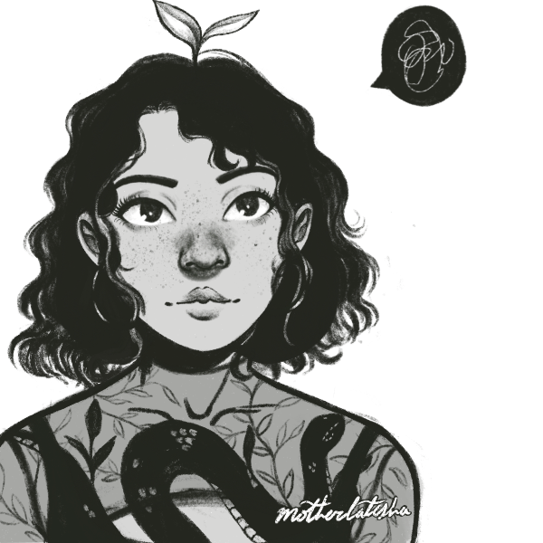

About the Author
My name is Zoe, but I also go by Adolla online! I am an artist and designer, studying in Games and Interactive Media at MSU through the College of Communication Arts and Sciences. My major involves pretty much anything to do with the internet and content creation, but I have a specific focus in game art and design. Along with that, I minor in Graphic Design and Comics Art! As you may have guessed, I love art! I am actively focusing on growing my skills as an artist, studying techniques from artists actively in the field and meeting people in the wonderful creative community!
